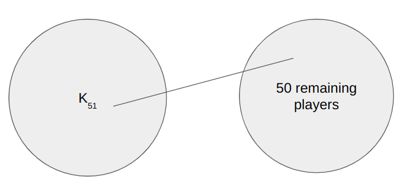

We can solve this problem using a process similar to induction. Let's start by considering two players in the entire academy, \(A\) and \(B\). Assume that \(A\) belongs to some arbitrary group of \(50\) players, and that \(B\) is the player who has played against everyone within that group. Hence, we can make the distinction that \(A\) has played against \(B\).
From there, we can consider a group of \(50\) players containing both \(A\) and \(B\). As stated in the proble, there must be a player outside of this group who has played against everyone within. We can call this player \(C\). Now, because we already know that \(A\) and \(B\) have played against each other, it follows that \(A\), \(B\), and \(C\) have all played against each other. Notably, this is a \(K_3\) graph.
We continue by taking \(A\), \(B\), and \(C\) and placing them into an arbitrary group to find some player \(D\) who has played against all of them. This process of gaining a new player repeats indefinitely until we have a group of \(51\) players who have all played against each other, or a \(K_{51}\).
With a group of \(51\) players that have all played against each other, we can notice that the remaining \(50\) players in the academy also form a valid group of \(50\). We can apply the rule stated in the problem again. Since the only players outside of this group of \(50\) belong to the \(K_{51}\), the player who has played against the remaining group of \(50\) must have played against everyone in the academy. QED. 